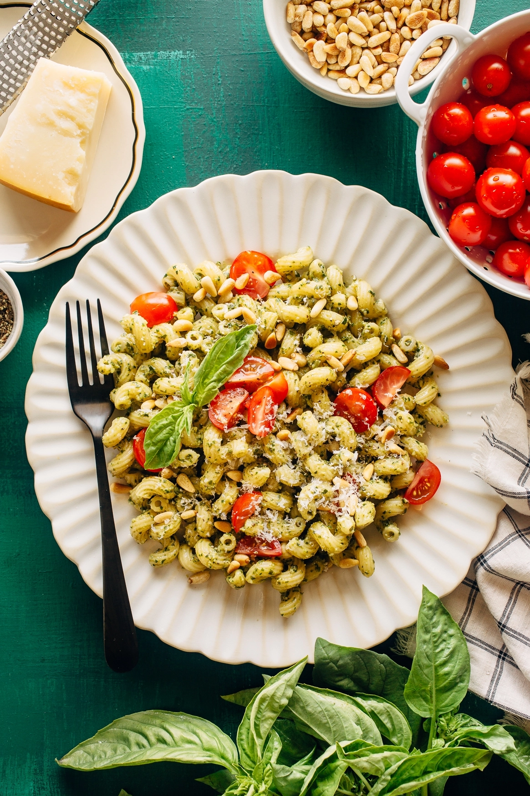

Pasta with Pesto

Description
A simple pasta dish with basil pesto, black pepper, and Parmesan. This dish is quick and simple to prepare, and you can mix it up by adding a variety of other ingredients to create a full meal.
Ingredients
- 1 pound dry pasta (any shape with curves or ridges to hold the sauce)
- Kosher salt
- 1 cup basil pesto
- Grated Parmesan cheese
- Freshly ground black pepper
Steps
- Bring a large pot of salted water to a boil. Cook pasta until al dente. Drain pasta, reserving 1 cup of pasta cooking liquid, and transfer to a large bowl.
- Toss pasta with pesto until evenly coated. If the pasta looks a bit dry, splash in some pasta cooking liquid. Season to taste with salt.
- At this point you can mix in other ingredients like halved cherry tomatoes and toasted pine nuts.
- Grated Parmesan cheese
- Freshly ground black pepper